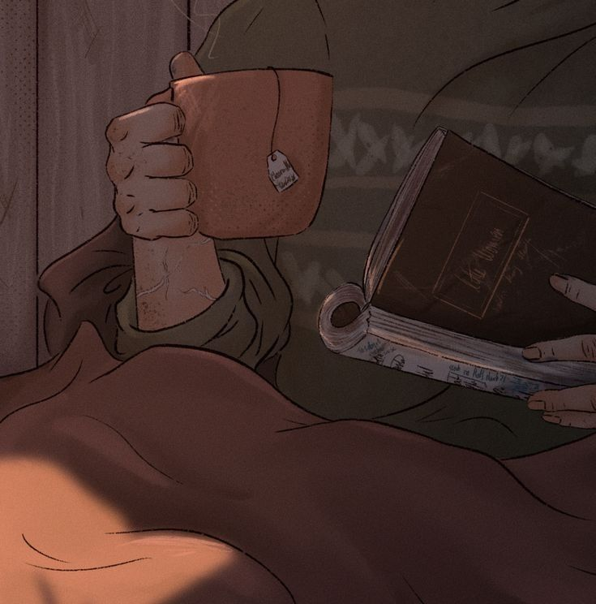
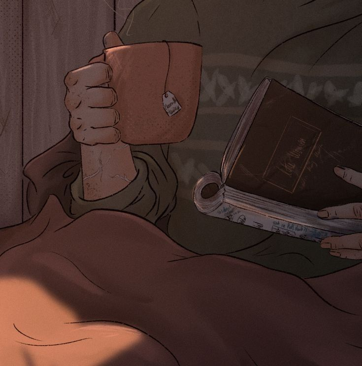

Чай
Исследователи говорят, что в конце XVIII века больше чая импортировалось нелегальными способамиАранова Елизавета ВарвараАранова Елизавета Варвара. Контрабандисты смешивали листья чая с другими растениями, увеличивая свои поставки и прибыль. Но не всегда в ход шли листья, часто в мешки с чаем попадали ветки, опилки и даже была обнаружена смесь из листьев ясеня.
Любой, кто продает чай дарджилинг, должен сначала получить лицензию от Чайного совета Индии. Этот пункт в 2000 году был включен в Закон о чае 1953 года. Все потому, что этот сорт чая произрастает только в одном регионе. Согласно закону, любой чай с маркировкой дарджилинг без гарантии его качества и правильной сертификации не должен экспортироваться из страны.
По крайней мере, легенда гласит именно так. В древнем Китае обезьян якобы обучали собирать чайные листья, но сегодня это ставится под сомнение. Обезьян, действительно, используют для сбора других урожаев, например, кокосов, но маловероятно, что они смогут собрать чай, ведь это кропотливая работа, требующая знаний и внимательности. Тем не менее, кое-где еще можно купить чай с пометкой.
Фотографии
 
